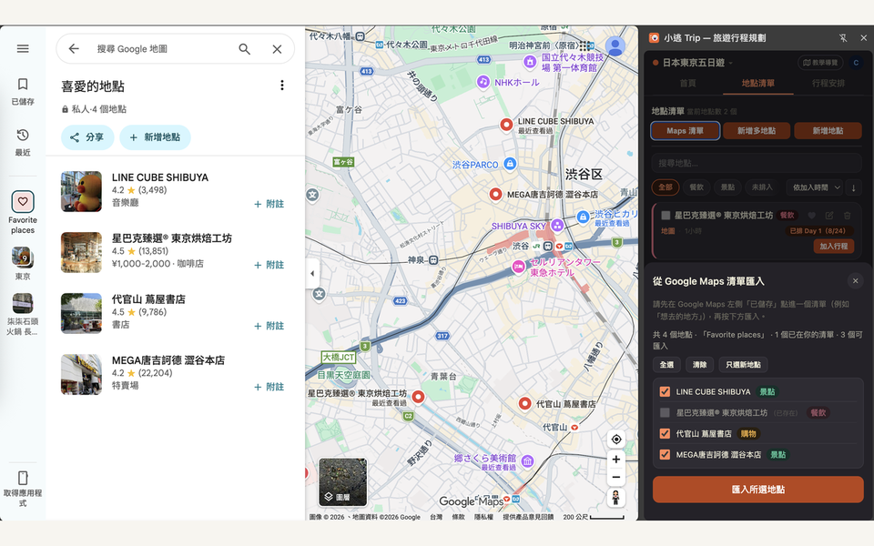
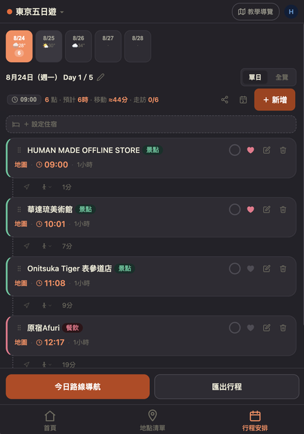

小逃 Trip
Chrome 擴充功能 ＋ PWA · 獨立開發
在 Google Maps 旁邊收藏地點、排出每日行程，與旅伴即時共編。解決「一邊查地圖、一邊在另一個分頁排行程」的痛點。
🧩 Chrome 擴充功能
📱 手機網頁版（PWA）


- 從 Maps 一鍵收藏，匯入已儲存清單並自動判斷分類
- 每日時間軸自動推算抵達時間與站間交通，偵測繞路時主動建議順路排序
- 邀請碼多人即時共編，手機網頁版同步同一份行程
- 已送審 Chrome 線上應用程式商店
擴充功能已送審 Chrome 線上應用程式商店，上架前可用開發者模式安裝試用